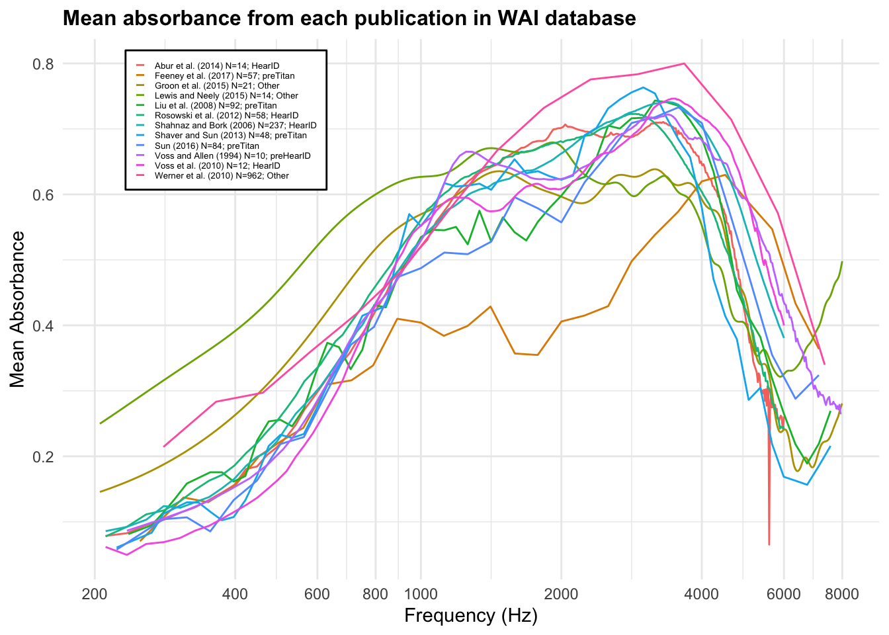
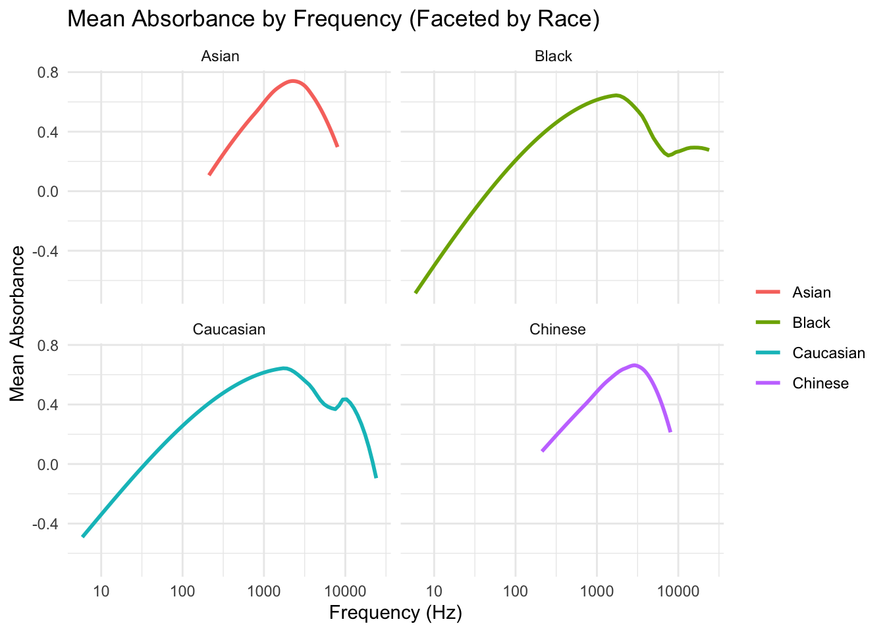
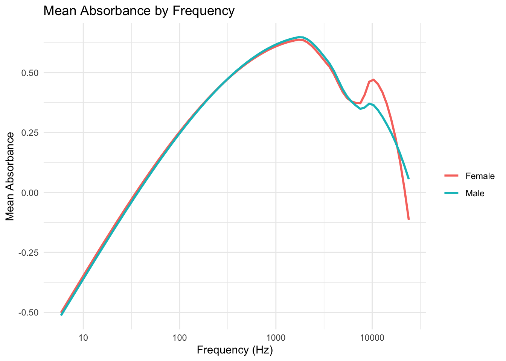
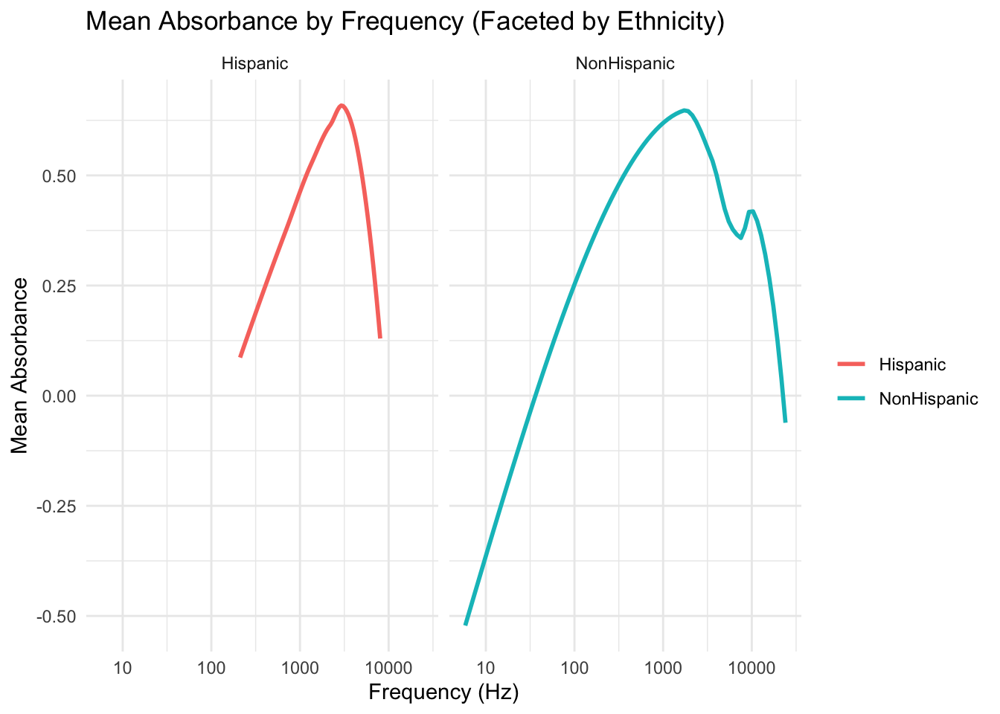

library(tidyverse)
library(dplyr)
library(DBI)
library(shiny)Mean Absorbance by Publication Data Analysis
Analysis of Mean Absorbance and Frequency
PLAN
Create SQL Connection
library(RMariaDB)
con_wai <- DBI::dbConnect(
RMariaDB::MariaDB(), host = "scidb.smith.edu",
user = "waiuser", password = "smith_waiDB",
dbname = "wai"
)
Measurements <- tbl(con_wai, "Measurements")
PI_Info <- tbl(con_wai, "PI_Info")
Subjects <- tbl(con_wai, "Subjects")
# collect(Measurements)Show Database Tables
SHOW TABLES;| Tables_in_wai |
|---|
| Codebook |
| Measurements |
| Measurements_pre2020 |
| PI_Info |
| PI_Info_OLD |
| Subjects |
| Subjects_pre2020 |
Create table for the plot
SELECT PI_Info.Identifier, PI_Info.AuthorsShortList, Frequency, AVG(Absorbance) AS mean_absorbance, PI_Info.Year
FROM PI_Info
LEFT JOIN Measurements ON PI_Info.Identifier = Measurements.Identifier
WHERE Measurements.Identifier IN ("Abur_2014", "Feeney_2017", "Groon_2015", "Lewis_2015", "Liu_2008", "Rosowski_2012", "Shahnaz_2006", "Shaver_2013", "Sun_2016", "Voss_1994", "Voss_2010", "Werner_2010") AND Frequency < 8000 AND Frequency > 200
GROUP BY Identifier, Frequency;Create legend for the plot
SELECT AuthorsShortList, Year, COUNT(DISTINCT SubjectNumber, Ear) AS N, Instrument, Frequency, AVG(Absorbance) AS mean_absorbance, CONCAT(AuthorsShortList, " (",Year,") ", "N=", COUNT(DISTINCT SubjectNumber, Ear), "; ", Instrument) AS legend
FROM PI_Info AS p
LEFT JOIN Measurements AS m ON m.Identifier = p.Identifier
WHERE p.Identifier IN ("Abur_2014", "Feeney_2017", "Groon_2015", "Lewis_2015", "Liu_2008", "Rosowski_2012", "Shahnaz_2006", "Shaver_2013", "Sun_2016", "Voss_1994", "Voss_2010", "Werner_2010") AND Frequency < 8000 AND Frequency > 200
GROUP BY p.Identifier, m.Instrument, FrequencyPlot
labels |> ggplot(aes(x = Frequency, y = mean_absorbance, color = legend, group = legend)) +
labs(
title = "Mean absorbance from each publication in WAI database",
x = "Frequency (Hz)",
y = "Mean Absorbance",
color = NULL
) +
geom_line() +
scale_x_log10(
breaks = c(200, 400, 600, 800, 1000, 2000, 4000, 6000, 8000),
labels = c("200", "400", "600", "800", "1000", "2000", "4000", "6000", "8000")
) +
theme_minimal() +
theme(
plot.title = element_text(face = "bold", size = 12),
legend.text = element_text(size = 5),
legend.background = element_rect(fill = "white", color = "black"),
legend.position = c(0.2,0.85),
legend.box.margin = margin(0, 0, 0, 0),
legend.key.size = unit(0.2, "cm"),
legend.key.height = unit(0.2, "cm"),
legend.box = "horizontal"
) 
DESCRIPTION
Count # of Subjects for each group of interest in each publication
SELECT Sex, Race, Ethnicity, Identifier, SubjectNumber,
COUNT(*)
FROM Subjects
WHERE Identifier IN ("Abur_2014", "Feeney_2017", "Groon_2015", "Lewis_2015", "Liu_2008", "Rosowski_2012", "Shahnaz_2006", "Shaver_2013", "Sun_2016", "Voss_1994", "Voss_2010", "Werner_2010")
GROUP BY Sex, Race, Ethnicity, Identifier, SubjectNumber| Sex | Race | Ethnicity | Identifier | SubjectNumber | COUNT(*) |
|---|---|---|---|---|---|
| Female | Unknown | Unknown | Abur_2014 | 1 | 1 |
| Female | Unknown | Unknown | Abur_2014 | 3 | 1 |
| Female | Unknown | Unknown | Abur_2014 | 4 | 1 |
| Female | Unknown | Unknown | Abur_2014 | 6 | 1 |
| Female | Unknown | Unknown | Abur_2014 | 7 | 1 |
| Female | Unknown | Unknown | Abur_2014 | 8 | 1 |
| Female | Unknown | Unknown | Abur_2014 | 10 | 1 |
| Unknown | Unknown | Unknown | Feeney_2017 | 103 | 1 |
| Unknown | Unknown | Unknown | Feeney_2017 | 104 | 1 |
| Unknown | Unknown | Unknown | Feeney_2017 | 106 | 1 |
Get frequency and mean absorbance for race
SELECT s.Race, Frequency, s.Identifier, AVG(Absorbance) AS mean_absorbance
FROM Subjects AS s
LEFT JOIN Measurements AS m ON m.SubjectNumber = s.SubjectNumber
WHERE s.Identifier IN ("Rosowski_2012")
GROUP BY s.Race, Frequency, s.Identifier;SELECT s.Sex, Frequency, s.Identifier, AVG(Absorbance) AS mean_absorbance
FROM Subjects AS s
LEFT JOIN Measurements AS m ON m.SubjectNumber = s.SubjectNumber
WHERE s.Identifier IN ("Rosowski_2012")
GROUP BY s.Sex, Frequency, s.Identifier;SELECT s.Ethnicity, Frequency, s.Identifier, AVG(Absorbance) AS mean_absorbance
FROM Subjects AS s
LEFT JOIN Measurements AS m ON m.SubjectNumber = s.SubjectNumber
WHERE s.Identifier IN ("Rosowski_2012")
GROUP BY s.Ethnicity, Frequency, s.Identifier;Plots
plot_race |>
ggplot(aes(x = Frequency, y = mean_absorbance, color = Race)) +
geom_smooth(method = "loess", se = FALSE, size = 1) +
labs(
title = "Mean Absorbance by Frequency (Faceted by Race)",
x = "Frequency (Hz)",
y = "Mean Absorbance",
color = ""
) +
scale_x_log10() +
theme_minimal() +
facet_wrap(~ Race)
plot_sex |>
ggplot(aes(x = Frequency, y = mean_absorbance, color = Sex)) +
geom_smooth(method = "loess", se = FALSE, size = 1) +
labs(
title = "Mean Absorbance by Frequency",
x = "Frequency (Hz)",
y = "Mean Absorbance",
color = ""
) +
scale_x_log10() +
theme_minimal() 
plot_ethnicity |>
ggplot(aes(x = Frequency, y = mean_absorbance, color = Ethnicity)) +
geom_smooth(method = "loess", se = FALSE, size = 1) +
labs(
title = "Mean Absorbance by Frequency (Faceted by Ethnicity)",
x = "Frequency (Hz)",
y = "Mean Absorbance",
color = ""
) +
scale_x_log10() +
theme_minimal() +
facet_wrap(~ Ethnicity)
dbDisconnect(con_wai)Source: This dataset was from the WAI Database. Wideband Acoustic Immittance (WAI) Database